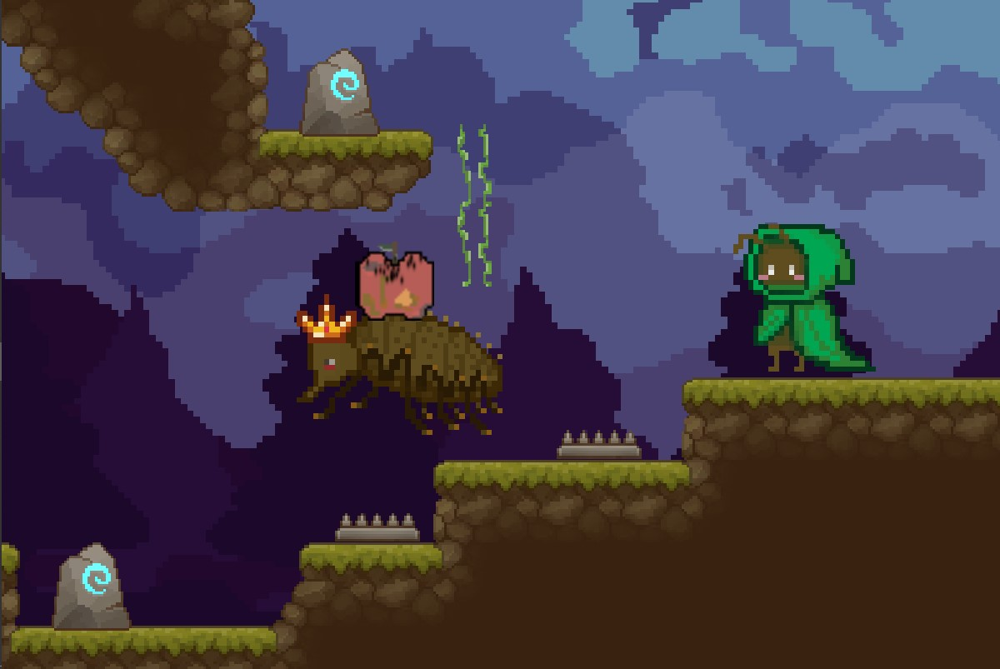
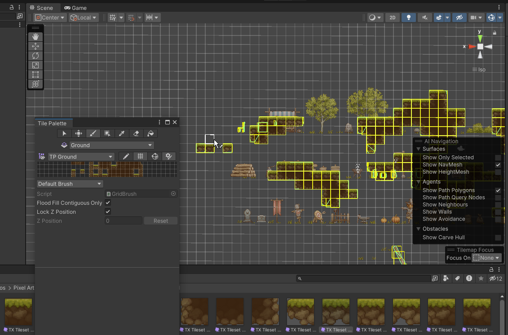
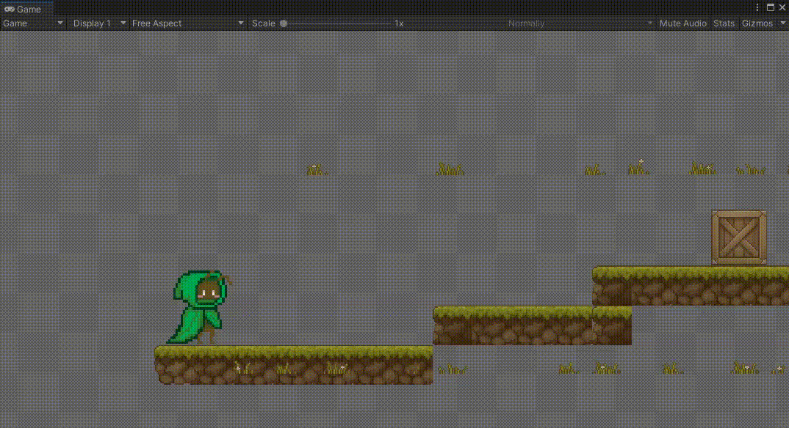

Fall Semester 2023
Group project
For our first project in IAT312, we were tasked with redesigning a prototype of a game utilizing game design concepts taught in the course. The original game involved the player (an ant) escaping from a sinkhole with an antlion predator at the bottom. My team members included Janelle Hong (planning, support), Jimmy Lin (art), and Kenny Zhang (lead programming).
Game concept ideation, level design, sprite animation, playtesting evaluation.
Unity, Figma
As a team, we first began reviewing the project requirements and then ideated what type of game we wanted to make. There was a lot of freedom for us in the project, and we chose to change the game to a sidescrolling platformer in which the player explores an underground ant hill.
We wanted to implement some story and background to the characters as motivation for the player. As a result, in our mini story, our protagonist is out on the search for food for their family, but ends up wandering too far. Our game begins with the player trying to navigate their way home.
Using tilemaps I created the levels that the player goes through. Some things I had to consider were how well the player could navigate the map, challenges and rewards, and the placement of items and enemies. I wanted to focus on leading the player around to different areas to give them a sense of exploration and fun.
We used the Pixel Art Platformer - Village Props asset pack by Cainos to create the levels.
The protagonist sprites were created by Jimmy. I brought them into Unity and connected the player input and movement with the sprite animations using the Animator tool. Part of this involved creating a simple looping animation for the resting, walking, jumping, and falling states. After creating the animations, I then used the Animator Controller to create the logic for the transitions between the states.
Throughout the prototype iterations, we continually sought feedback from playtesters (our friends) who gave their input on our progress and how fun they felt the game was. Some of the feedback included how they felt about the level, the movement, bait mechanics, and more. These were improved to the best of our ability within the given timeline.
Although there were some bugs that couldn't be completely worked out, the game came together quite well and we were able to produce a final game within a short timeline during our first time working as a team. I liked using the animator to create the animations and working out the timings and looping was interesting. Additionally, it was intriguing seeing how the levels I designed was navigated by someone else, as I could see the different ways people explored the level.